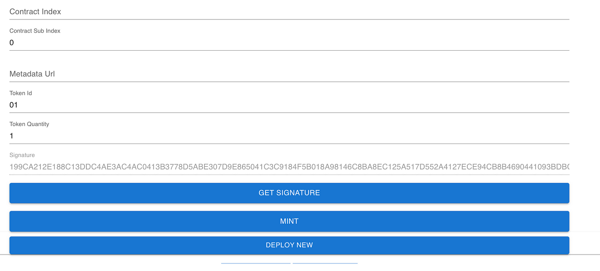
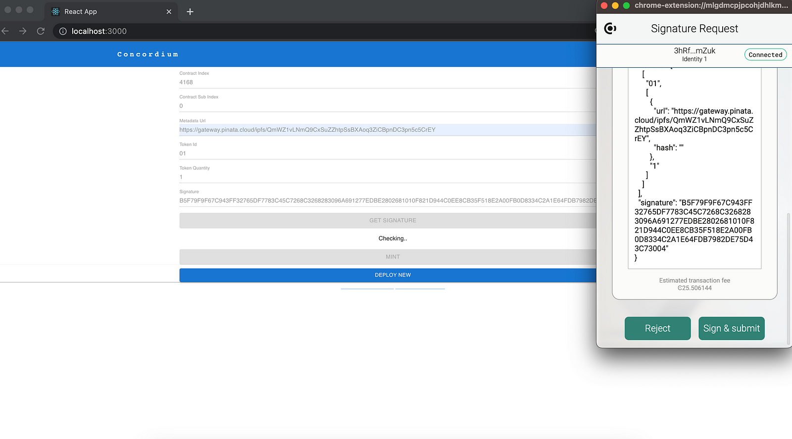
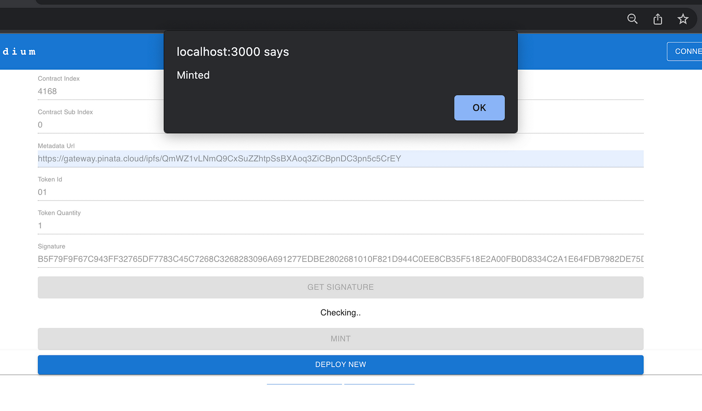

How it works#
In this last section, you will learn how to run the dApp to mint an NFT.
Verifier back end#
First you need to run the verifier backend. Your dApp will be communicating with it to get the statement, challenge and post the proof and get the signature back. It expects parameters from the terminal but you are free to use all of them from a JSON file. We will use a mixture by giving the keys (verify and sign) as a parameter from the terminal and the statement from a JSON. In order to create a custom statement, you can check read about how to create proofs. For this tutorial scenario, you will use age proofs to be able to verify if a person is older than 18 or not, but you can also check if the person is from a certain country or not.
[
{
"type": "AttributeInRange",
"attributeTag": "dob",
"lower": "19000327",
"upper": "20050327"
}
]
When you have the statement JSON file, run the application inside of your executable path. If you are using your own node change the node IP to localhost; if you are using the testnet node keep it as below.
./<Executable-Name> --node http://node.testnet.concordium.com --port 8100 --log-level info --verify-key <YOUR-VERIFY-KEY> --sign-key <YOUR-SIGN-KEY> --statement "$(<PATH-TO-YOUR-STATEMENT/statement.json)"
Run the dApp and request a proof#
In the mint-ui directory start the dApp with the following command:
yarn start
You will create a new instance of the cis2-multi contract and try to mint an NFT with another account. Click DEPLOY NEW to create a new instance. As you notice, it sends the verify_key as an initiation parameter. The contract index is 4168,0.
Click GET SIGNATURE and accept the request. Wait for the proof verification. If it’s verified you have a signature signed by the private key (signKey) given when running the application.
If everything goes well, you have a signature similar to the one below.
You are almost there. Since you now have the signature, you will be able to mint a token because you have proven that you are older than 18! Provide the metadata and the contract index to mint a token!
When the transaction is finalized, you will have an alert notifying that minting is successful!
 Copyright 2021 - 2023, Concordium Software ApS
Copyright 2021 - 2023, Concordium Software ApS